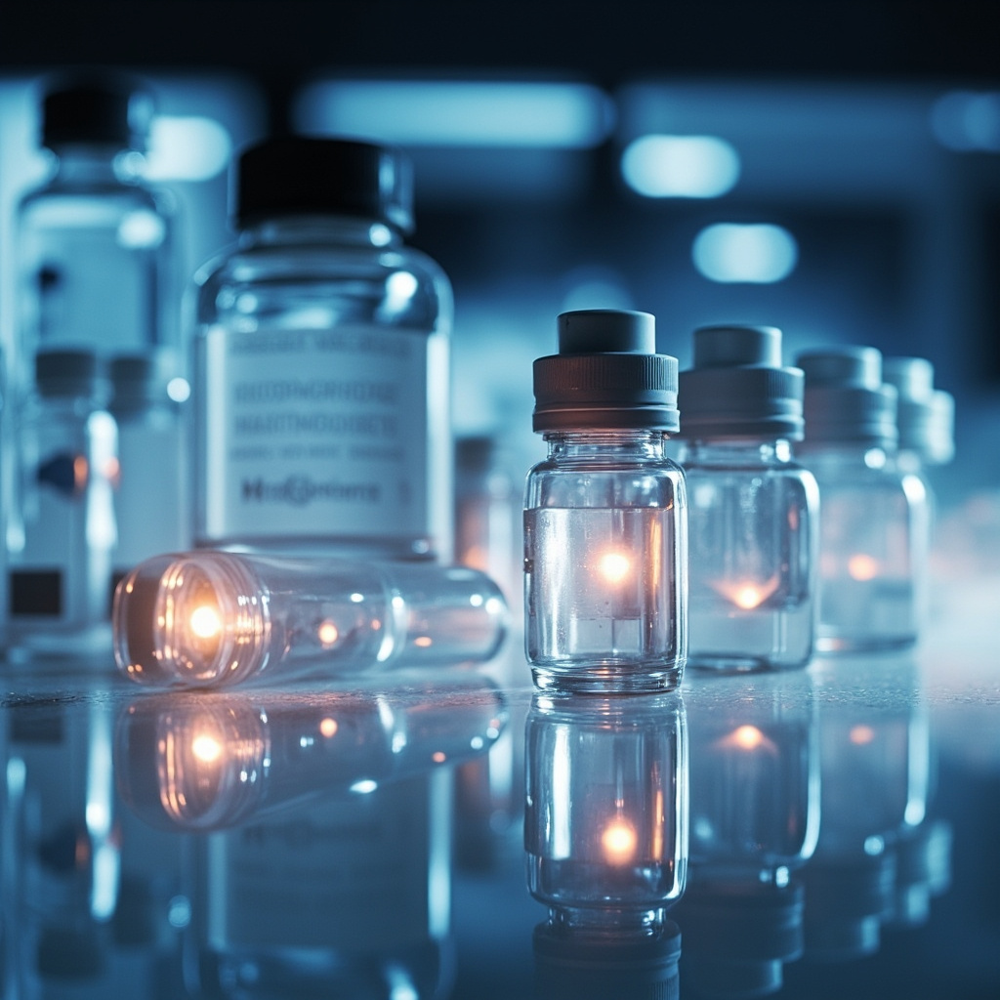

ASCO 2026: China's ADC Explosion — First-Line Breakthrough, Bispecific Iteration, Multi-Target Surge
At the ASCO 2026 Annual Meeting, China's ADC sector achieved three landmark advances. First, a formal leap from late-line salvage to first-line standard-of-care — Kelun-Biotech's sacituzumab tirumotecan (sac-TMT) combined with pembrolizumab reduced the risk of disease progression or death by 65% versus pembrolizumab monotherapy in a head-to-head randomized controlled trial, marking the first-ever proof that "ADC + immunotherapy" can defeat PD-1 monotherapy. Second, molecular architecture evolved from conventional monoclonal antibody ADCs to first-in-class bispecific ADCs, with Chinese companies pioneering the conjugation of bispecific antibodies with cytotoxic payloads, opening a new paradigm for next-generation ADC design. Third, the target landscape expanded dramatically from a handful of targets such as HER2 to a broad portfolio encompassing TROP2, CLDN18.2, B7-H3, Nectin-4, and other solid tumor driver genes, covering major indications including lung, gastric, breast, and urothelial cancers. With a record number of oral presentations featuring Chinese ADCs at this year's ASCO, China has vaulted from an ADC follower to a core global epicenter of ADC innovation.